Create an assembly drawing
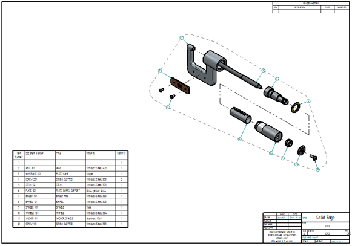
In the next few steps, you will create an exploded view drawing of the assembly.
You will also place a parts list on the drawing.
At the top-left of the application window, click the File tab to display the File menu.
On the File menu, click New, and then click Drawing of Active Model.
The Create Drawing dialog box is displayed.
On the Create Drawing dialog box, ensure the Run Drawing View Creation Wizard option is set.
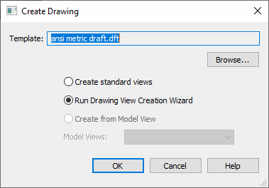
Ensure that the template matches the name in the illustration. If it does not match, use the Browse button to locate and select it, and then click OK.
Solid Edge transitions to the Draft environment and creates a new Draft document, using the template specified in the Create Drawing dialog box. Solid Edge also displays the command bar for the Drawing View Creation Wizard, which helps streamline the process of placing views of 3D models on a drawing.
A dynamic preview of the assembly is displayed. Do not click yet. The view of the assembly that you will place on the drawing is the exploded view of the assembly that you saved a few steps ago.
On the Drawing View command bar, click Drawing View Wizard Options.
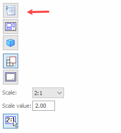
In the Drawing View Wizard dialog box, under Assembly Drawing View Options,from the .cfg, PMI model view, or Zone list select the EXPLODE1 view that you saved earlier. Click OK.
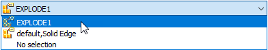
On the command bar, set the scale to 1:1.
When the Drawing View Creation Wizard closes, a rectangle representing the view that will be created is attached to the cursor. The view will be placed where you click.
-
Position the view approximately as shown, and click to place it.
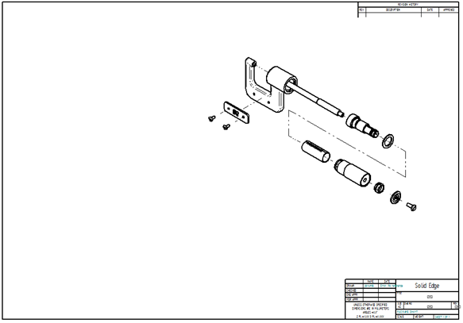
By default, the view has been created with a wireframe display. Let's make this a shaded display using the model colors.
Choose Home tab→Select command or press the Esc key.
Position the cursor on the view, as shown below, and right-click. On the shortcut menu, choose Properties.
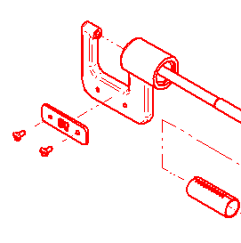
On the High Quality View Properties dialog box, select the Shading and Color tab, then select the options: Show shading in drawing views and Use model colors.
At the scale of this drawing, the image will appear cleaner if you also clear the Apply part base colors to edge styles option.
Click OK.
To apply the options you have set, Solid Edge needs to get more information from the assembly file.
Choose Home tab→Drawing Views group→Update Views .
Click the drawing sheet, away from the view, to deselect the view and show its final state.
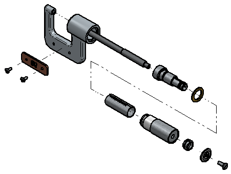
Notice that an exploded view of the assembly is placed in the new drawing document and that the display of the drawing view is shaded with visible edges displayed.
In the next few steps you will place a parts list of the assembly on the drawing sheet.
You will also place balloons on the exploded view automatically using the Parts List command.
Choose Home tab→Tables group→Parts List command .
On the Parts List command bar, ensure that the Link to Active option is set.
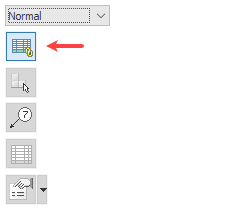
In the graphics window, position the cursor over the drawing view, then click to select it.
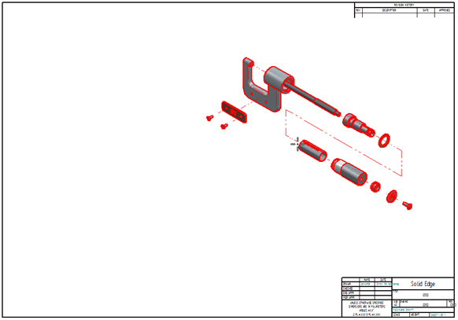
Notice that additional options in command bar are activated after you select the drawing view.
On the Parts List command bar, click the Properties button .
On the Parts List Properties dialog box, click the List Control tab, and then select the Atomic List (all parts) option.
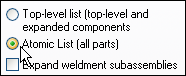
Click the Balloon tab, and then clear the Use Item Count for lower text option.
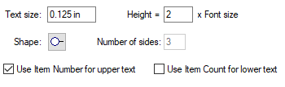
Click the Columns tab.
Notice that you can click a property in the lower list, and then click the Add Column button to add a property to the Columns list. These are the properties that will display as columns in the parts list table. You can use the Move Up and Move Down buttons to change the order of the columns, and you can use the Delete Column button to remove columns.
Use these controls to add and order the following columns:
-
Item Number
-
Document Number
-
Title
-
Material
-
Quantity
Click OK.
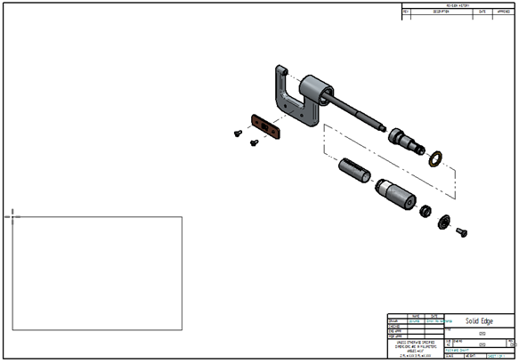
-
A rectangle representing the parts list table is attached to the cursor. Position the table as shown, and click to place it.
Notice that the parts list and balloons are placed on the drawing sheet, and an alignment shape is displayed around the view, with the balloons connected to the shape. You can manipulate the shape to reposition the balloons.
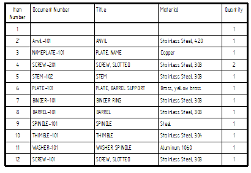
On the Viewing commands toolbar, choose Zoom Area  ,and then zoom in as shown in the illustration.
,and then zoom in as shown in the illustration.
After you resize the view area, right-click to exit the Zoom Area command.
Notice that the parts list contains rows for each part in the assembly and columns for the Item Number, Document Number, Title, Material, and Quantity.
You can configure your parts lists to meet your company's requirements.
On the Viewing commands toolbar, choose Fit  to fit the drawing sheet to the view.
to fit the drawing sheet to the view.
On the Quick Access toolbar, click the Save button  .
.
On the Save As dialog box, accept the default filename of stoabmm.dft, and then click the Save button to save the draft document.
Congratulations!
You have completed your first assembly and assembly drawing in Solid Edge.